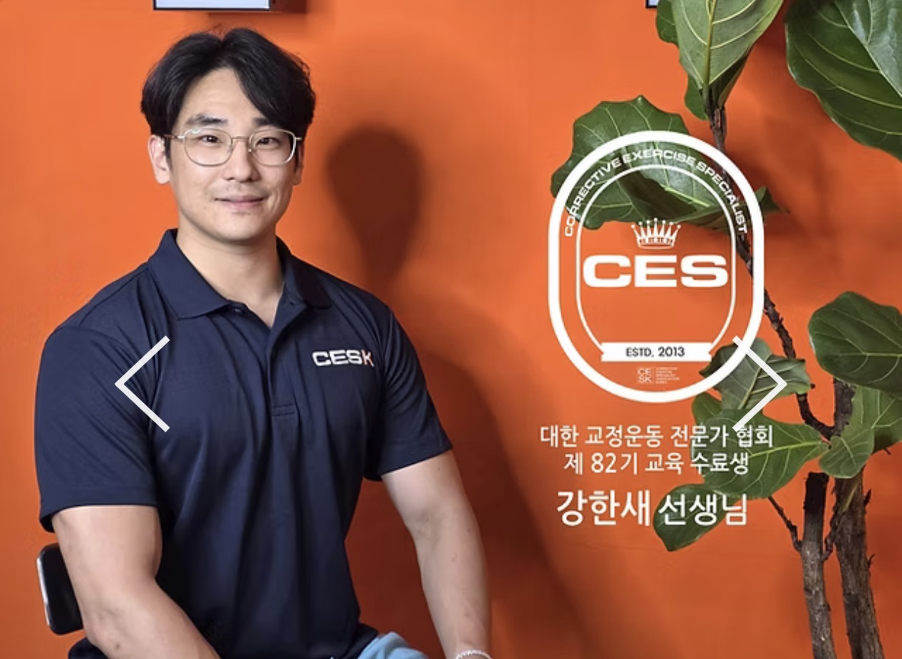
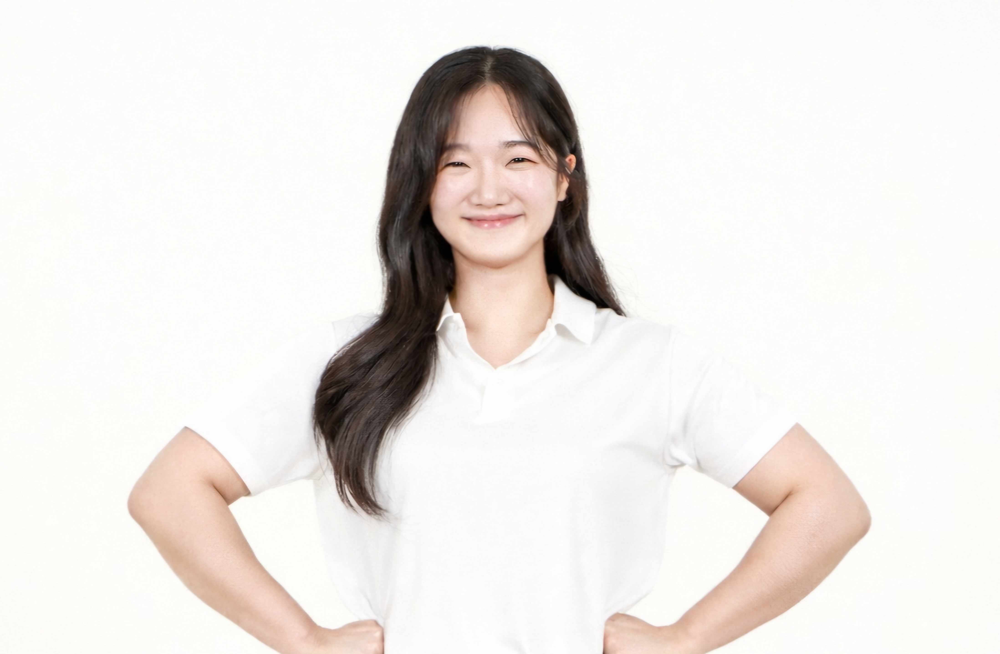
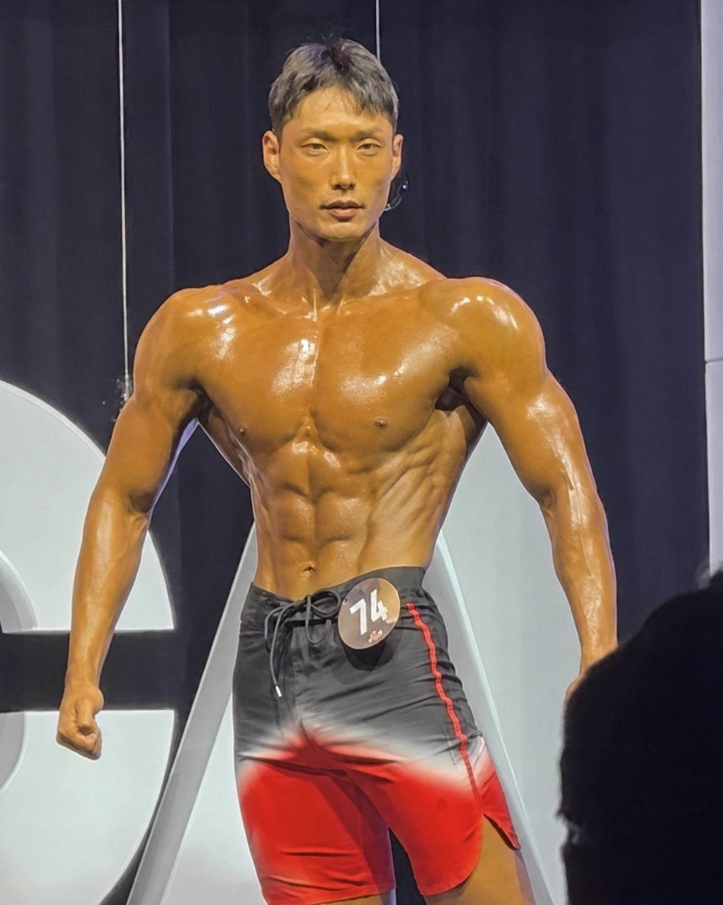
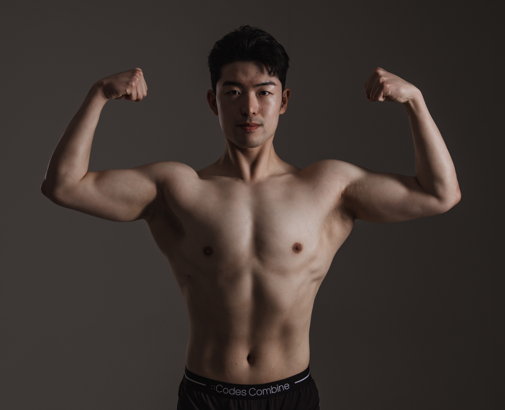
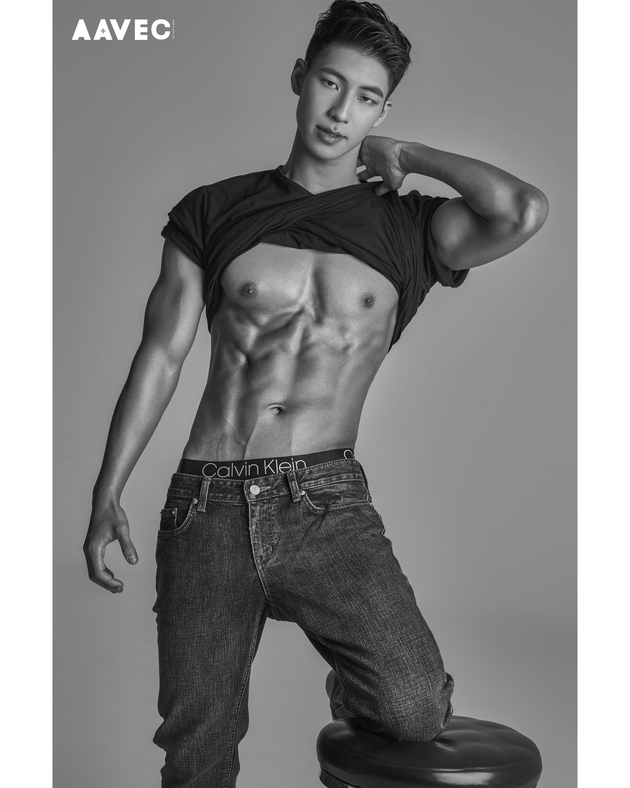

1986WONHEUNG TEAM
소개 준비 중
곧 이곳에서 만나보실 수 있습니다.
프로필 업데이트 예정1986 FITNESS / OUR TEAM
전문 분야를 살펴보고,
궁금한 선생님의 이야기를 열어보세요.

↗움직임의 기본부터, 더 단단한 나까지.

내 생활에 맞게, 흔들려도 다시 이어가는 운동.

꾸준했던 운동을, 목표에 맞는 변화로.

스스로 바꾼 몸, 함께 키워갈 당신.

내 몸을 이해하는 수업, 일상을 바꾸는 운동.
곧 이곳에서 만나보실 수 있습니다.
프로필 업데이트 예정강한새 · 한슬기 · 김재현 · 채지훈 · 박찬욱 트레이너 소개를 확인하실 수 있습니다. 다른 선생님들의 소개도 순차적으로 추가됩니다.
LET’S FIND YOUR COACH
운동 목표와 가능한 시간을 알려주세요.
상담에서 함께 이야기해 보세요.